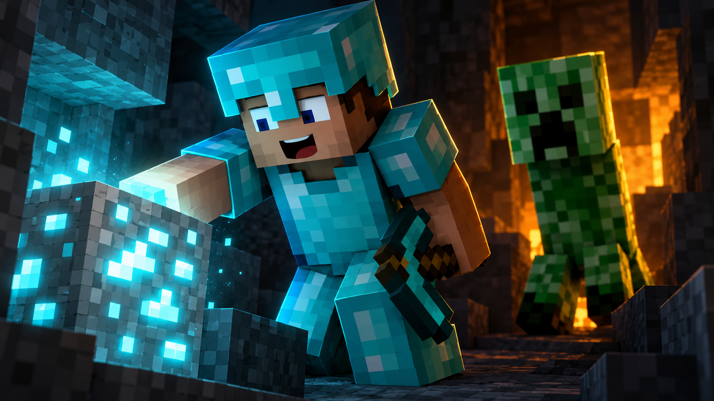
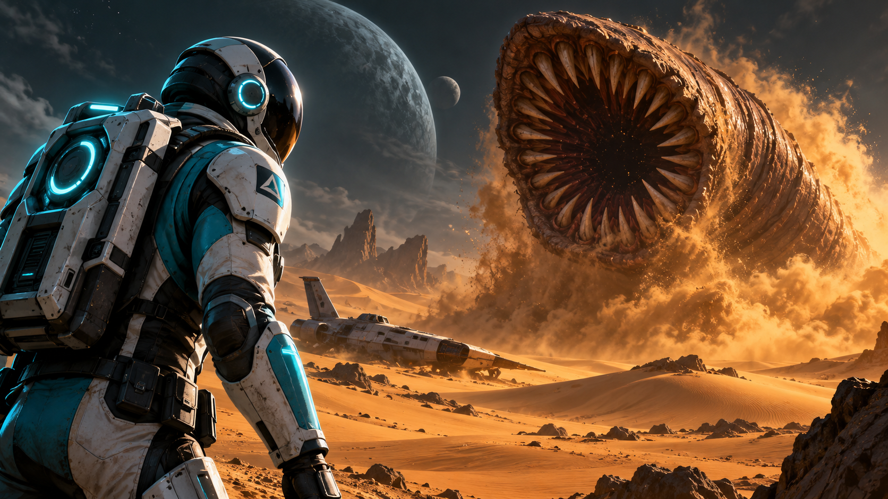
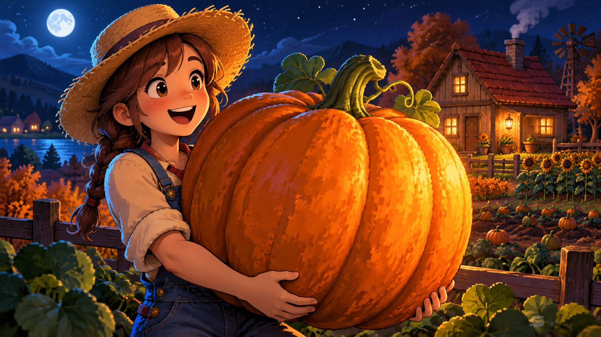

Gaming thumbnail concepts
Three new independent concepts with a clear visual moment, strong lighting and a readable focal point. Each uses a different game setting while keeping a consistent approach to composition.
Portfolio fan concepts created in October 2026. These are new illustrations, not client commissions or actual gameplay screenshots. Game names identify the inspiration; this work is not affiliated with the game studios.


